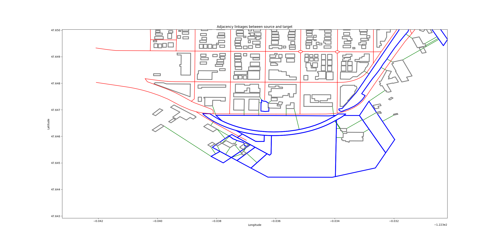

Quickstart
This guide will get you up and running with adjacency analysis quickly.
Load the data. geo-adjacency expects you to provide your data as Shapely geometries. You will provide three lists: source_geometries, target_geometries, and obstacle_geometries. What we are analyzing is which of the source geometries are adjacent to which of the target geometries. Obstacles can prevent a source and target from being adjacent, but they do not participate in the adjacency dictionary.
Create an AdjacencyEngine. In this case, we’ll load the sample data which is available on Github.
from matplotlib import pyplot as plt from scipy.spatial import voronoi_plot_2d from shapely.wkt import loads from geo_adjacency.adjacency import AdjacencyEngine import os.path import json from shapely.geometry import shape def load_geojson(path): with open(path) as f: return [shape(feature["geometry"]) for feature in json.load(f)["features"]] # Load the example data data_dir = os.path.join(os.path.dirname(__file__), 'data') source_path = os.path.join(data_dir, 'Buildings.geojson') target_path = os.path.join(data_dir, 'Parks.geojson') obstacle_path = os.path.join(data_dir, 'Roads.geojson') source_geoms = load_geojson(source_path) target_geoms = load_geojson(target_path) obstacle_geoms = load_geojson(obstacle_path) # Find buildings that are adjacent to parks, except where a road interferes. engine = AdjacencyEngine(source_geoms, target_geoms, obstacle_geoms) print(engine.get_adjacency_dict())
You can visualize the output with a handy built-in method which uses pyplot. (Source geoms are grey, targets are blue, obstacles are red. Linkages are green. .. code-block:: python
# plot the adjacency graph engine.plot_adjacency_dict()
You probably will want to match the adjacency dictionary back to the original data so that you can do something cool with it.
for source_i, target_i_list in output.items(): source_geom = source_geometries[source_i] target_geoms = [target_geometries[i] for i in target_i_list]
That’s it!
See Examples for more details and additional features and settings.